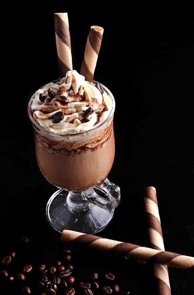
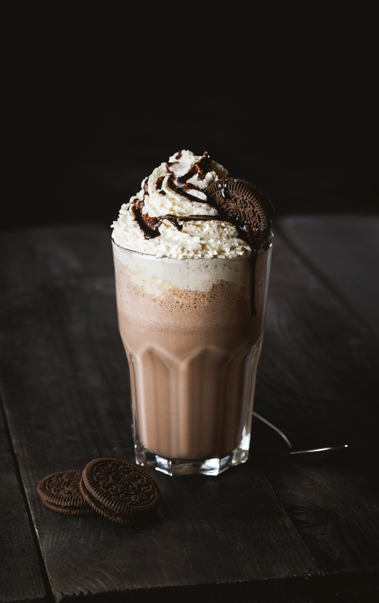

Si queremos un café bien frío, debemos saber que hay vida más allá del café con hielo aunque sea una de las propuestas más rápidas y que más bien preservan la esencia del café.
INGREDIENTES
-375 ml de café frío
-500 ml de leche semidescremada
-2 cucharadas de azúcar
-Chocolate caliente (3 cucharadas serán suficientes)
-Hielo en abundancia
Una vez disponemos de los ingredientes, el procedimiento es muy sencillo:
1) Sólo hay que ponerlos todos en la licuadora y dejarla trabajar hasta que la mezcla sea homogénea.
2) Una vez servido en un vaso, se puede coronar la bebida con un poco de nata manchada con chocolate. En definitiva, una combinación deliciosa.
CAPUCHINO FRIO

Italia… Nos ha dado recetas de cocina deliciosas, ciudades indescriptibles llenas de historia y belleza, un idioma maravilloso y, cómo no, el capuchino. Esa manera de servir y disfrutar el café que ha conquistado medio mundo.
INGREDIENTES
-1 taza de café
-50ml de leche
-Cacao en polvo o canela
-1 taza de hielos
Preparación de este café de verano:
1) Prepara un café solo y añádele azúcar a tu gusto.
2) Vierte la leche en tu licuadora y bátela hasta que consigas que salga espumosa
3) Una vez apartada la leche, pica los hielos en tu licuadora
4) En una taza, vierte el café y la leche líquida
5) A continuación, agrega el hielo picado y finalmente la espuma de la leche
6) Espolvorea cacao en polvo o canela molida para darle un toque de sabor muy rico (opcional)
Recomendación: A la hora de echar azúcar al café solo, ten en cuenta que luego vas a añadirle leche y cacao, que endulzarán la bebida.
FRAPPE OREO

Seguro que alguna vez has probado el Frappé de Oreo y casi has babeado. ¡Está delicioso! Te dejo aquí la receta (muy fácil) para que puedas hacer esta bebida en tu casa y disfrutarla cuando quieras.
INGREDIENTES
-100ml de leche
-5 galletas oreo
-1 bola de helado de vainilla
Preparación
1) Mete las galletas Oreo en tu licuadora y tritúralas. Deja apartada una poca cantidad para después.
2) Añade la leche y el helado de vainilla. Licua hasta conseguir una mezcla homogénea.
3) Sirve en vaso muy frío. Puedes añadirle un poco de Oreo triturada por encima o nata montada.
Variantes: Si no cuentas con helado de vainilla, puedes añadirle a cambio un poco de extracto de vainilla para darle ese toque de sabor.